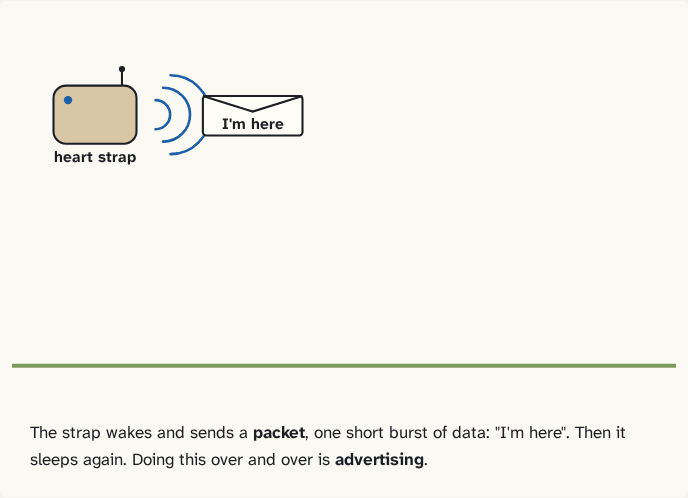

Free courses · 5 puzzles so far · about 30 minutes
Bluetooth Low Energy, from the radio up
Why a heart-rate strap lasts a year on a coin battery, how your phone finds it, and why your notifications never arrive. BLE's strange rules all come from one idea; this course builds them from it, one small puzzle at a time.

How it works
Each puzzle starts with a problem the radio has to solve, gives you one building block, shows it in a diagram that plays itself, and ends with three questions you have to answer to unlock the next one. The numbers come from the Bluetooth Core Specification and Android's documentation, linked on every page. How these courses are made, and how they're checked →
Modules
Every puzzle opens: start wherever you like. Each one builds on the ones before it; its check tells you you're ready for the next. ✓ marks the ones you've passed (saved only in this browser).
Module 1: Over the air
How a device that sleeps almost all the time can still be found, connected to, and heard.
- Start here: A year on a coin battery A heart-rate strap runs for months on a battery the size of a coin. Here's the one idea that makes that possible, and that every later puzzle follows from.
- Shouting into the room In puzzle 0, the strap's radio slept almost all the time. Here's how a device that's nearly always asleep still gets found. Builds on 0.
- A timetable for two In puzzle 1, the phone found the strap by listening to its advertisements. Now two devices that both sleep need to talk again and again, without missing each other. Builds on 1.
- The filing cabinet In puzzle 2, the phone and the strap met on a timetable. Now they need to agree on what the data is: which value is the heart rate, and which is the battery level. Builds on 2.
- Don't ask, get told In puzzle 3, the phone read the heart rate by asking for it. Asking again and again wastes radio time. Here's how the strap tells the phone instead, and the one step everyone forgets. Builds on 3.
Module 2: Making it fast and reliable (next)
Why only 20 bytes per packet (MTU, Data Length Extension, 2M PHY), throughput math, Android's one-operation-at-a-time rule and status 133.
Module 3: Trust and permissions (later)
Pairing and bonding, why "Just Works" doesn't stop a man in the middle, Android 12+ and iOS permissions.